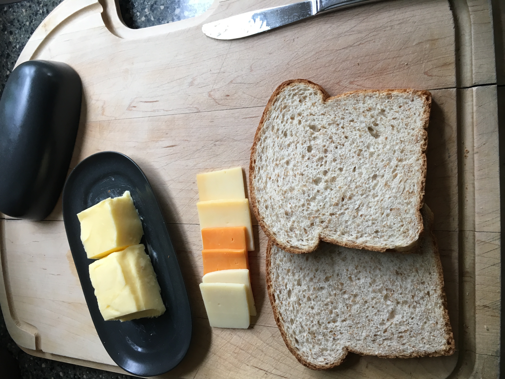
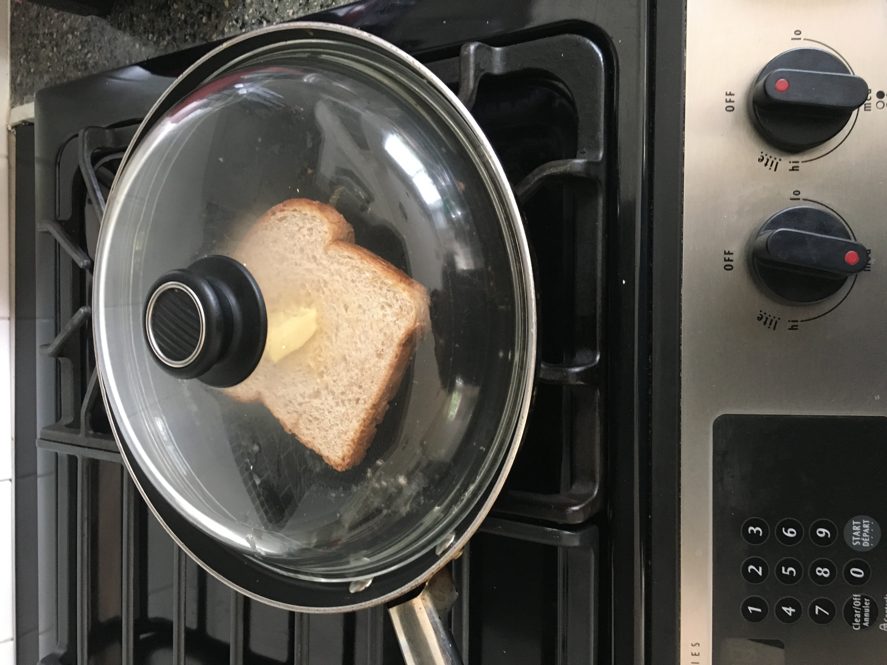
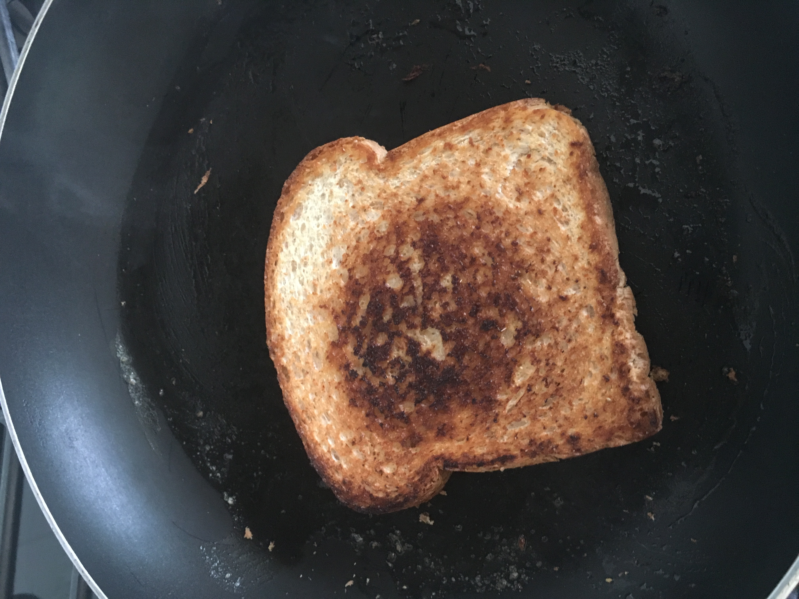
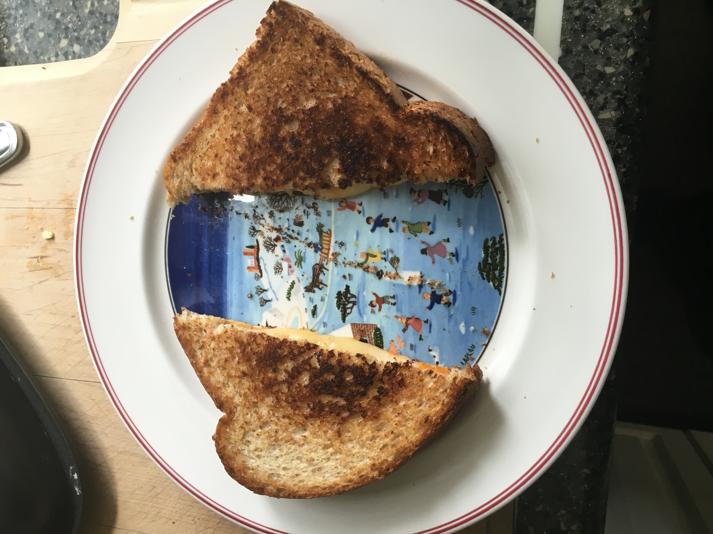

Ingredients :
Hide Photos

Bread
Just whatever kind. I'm not here to micromanage you.Cheese
I like to use marble cheddar or multiple cheeses because it looks and tastes awesome, but again, do whatever you want.Butter
You do know what butter is, don't you?
Instructions :
Hide Photos
- Spread the butter thinly on one side each of two slices of bread. If the butter is too cold to spread you can just put some butter in the pan
- Slice the cheese into pieces about 1/4 inch thick.
- Heat up the pan (to medium heat).
- Assemble the sandwich. Since you've put butter on both pieces of bread, you might want to assemble the sandwich on the pan so you don't get butter on your hands or whatever surface you're using, or just go for it.
- Put the sandwich on the pan. A good idea is to cover
it with a lid.

- Wait a while, but not too long. The idea is to get the sandwich a nice crispy golden brown on each side. The cheese should take care of itself, unless you cut it way too thick. You want to leave it until you see the hint of smoke. Not too much smoke, though. If the sandwich actually bursts into flames, something has gone wrong.

- Flip the sandwich over.
- Wait a little more. Then you're done.
- Either cut or do not cut the sandwich into a pleasing geometrical shape.

- Eat the sandwich. I like to dip it in ketchup.